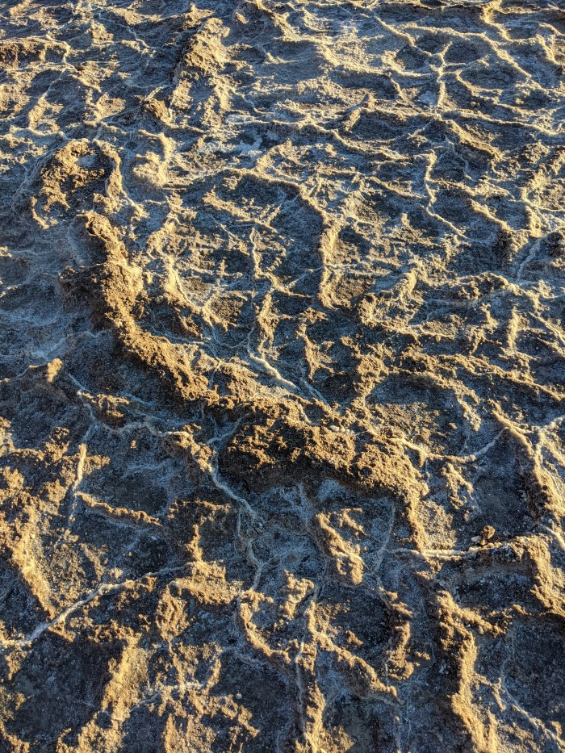
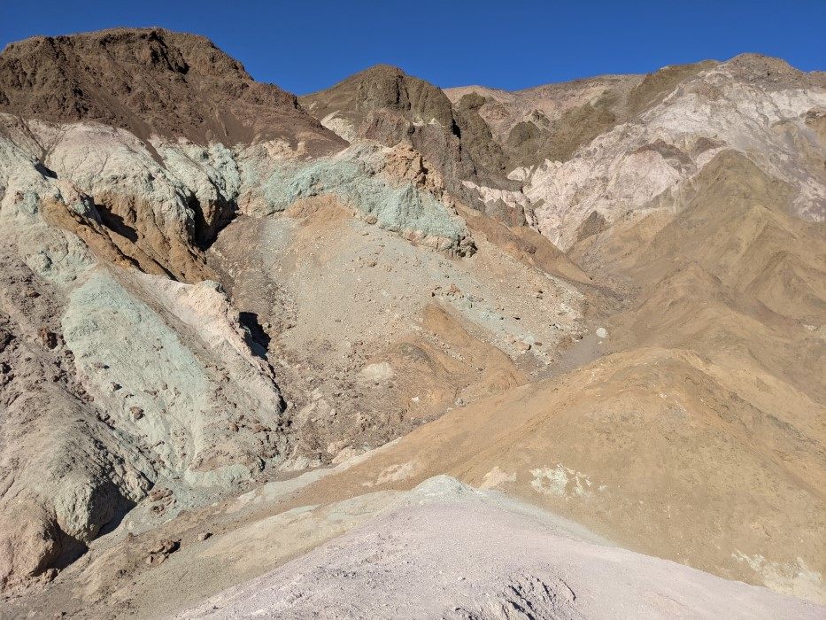

Cool Places Part 2: The Desert
You might have read the first blog post, Cool Places part 1: Sand, Sea and Scrubland.
This also has some sand, but less than you'd expect for a desert. For this I focus on the area in and around Death Valley, in the Mojave Desert, which you might be familiar with from Fallout New Vegas, because I was here recently. I have no particular scientific or academic knowledge of this area, beyond what I read off plaques and what my friends told me in the car. Nor have I even been to all of the cool places in this national part. But this is about fantasy, not about science, and I'll try and instead capture the sense of wonder as I visited this desert for the first time. .
Some facts: This place is supposedly the hottest place on earth. We went in the winter and it still got pretty hot. Much of it is below sea level. It used to be a lake, back in the Pleistocene. It's the home of the Timbisha people.
One thing that's cool about is that there is not a lot of vegetation, or signs of life on the surface (though a lot is hidden away). As a result, you notice the earth and how it changes a lot more. Most of these photos will be of the ground.
Salt
Badwater basin, the lowest place in North America, the remnants of the bottom of the lake. A few tiny pools of water remain - salty and undrinkable - and the Badwater Snail is here, which only lives in these few pools. We didn't go see the pupfish pools, some other remnants of the old lake where fish who have been isolated since prehistoric times now live.
The ground is salt. It looks like snow, where people have walked, and when it rains it melts and reforms into hexagons. There are ridges and there are veins of salt. I don't know what is up with that. It stretches on as far as the eye can see. Also, it's below sea level here, the lowest point in North America.
Someone dug a hole in the path. The path is also salt, packed into a road. Water seeps out. The badwater is still here, hidden just under the surface, maybe where the sun can't get to it? There is, I believe, often water hidden underground, more water before we started draining it for agriculture, and a lot of desert life lives off of this.
RPG ideas:
- What sort of location might have the last living things from another age? What if they were someone you could talk to? What might they know? What risks would you take to come and learn from them?
- If there have been people who live under the sea or under lakes, then seas come and go over the millenia. An ancient ruin might be unearthed. But seas leave behind fields of salt where nothing can grow, and places that were once full of life might now be harsh and deadly lands.
This is the Devil's Golf Course, a ways away. Here the salt has formed lumps, for some reason. A sign warns you that injury is likely if you try and walk on it - the ground is rough, likely to give way under you, and the sharp jagged edges of salt can cut you.
Up close the salt looks really cool.
RPG Idea: Imagine this bigger, the size of caves. Sharp, deadly, unpredictabe caves. Caves that might dissolve. Caves you have to explore before the rains come and whatever you are looking for is lost forever.
Colour
When not hidden underground, you can see the earth in all its colours. Here at Painter's Palette, green and purple. You might have seen enhanced photos of this - the colours are in fact fairly subtle - but still cool. Here I'm standing on a purple hill.
Around here, the rock forms hills and canyons. It might rain rarely, but you can see the path of water on the rocks. Every trickle of water has carved itself into the rocks over the centuries.

There's a lot of climbing up and down, it's often hard to see what's in the next valley, over the next hill. There are often few good paths. This could be a point crawl. The wilderness is not uniformly traversable, even with no trees.
It's a pretty small canyon, but it's my first desert canyon and I think it looks cool.
Nearby, here, it looks like the surface of mars, minus a plant or two. A speck in the distance is a person on the top of this hill. It is hard to demonstrate the scale of eerything with this.
Warnings
Rpg ideas:
There were signs everywhere warning of what might go wrong. This is the one I photographed. Please use for RPG reasons and not for general survival reasons. It's hard to read, but its warnings include:
- Water: Drink at least 1 gallon (4 liters) per day; always carry water
- Heat: Do not hike in low elevations when hot.
- Flashfloods: avoid canyons during rainstorms; move to higher ground
- Wildlife: Be alert for rattlesnakes, scorpions, and black widow spiders (elsewhere it says particularly at night.) Don't put hands or feet where you can't see first. Carry a flashlight at night.
- Mines: Do not enter tunnels. Dangers include cave-ins, hidden shafts, bad air. (No real-life dungeon-crawling!)
Elsewhere it says on hot days helicopters cannot fly. Rescue might be impossible. Temperature changes dramatically with a few feet of elevation, and goes from very cold at night to very hot very quickly, even in winter (this is winter). Signs say to never go more than 15 minutes from your car in summer. They say to stay inside air conditioning whenever possible. They say to keep a flashlight on you because of dangerous spiders and scorpions and snakes that come out at night.
Borax
Large sources of borax were discovered here. Twenty mule teams brought borax out, with the water for them all to survive. Incredibly valuable for a lot of purposes apparently. Only mineable in a few places on earth.
They had to bring in water to boil the stuff they get borax from, because it's too expensive to ship it out, but it got too hot in the summer for it to work. The interpretive panels kind of briefly mentioned the exploitation of labourers needed to process this in incredible heat, reliant on their employer to survive in the desert.
RPG ideas: Rare and valuable resources are a reason someone might want to go into a particularly dangerous location. Maybe the resources can only be gathered during a very limited time window? Maybe special things need to be brought there to extract it. Maybe it isn't possible to transport enough raw materials from the place, and you must travel there to create something. A source of magic or some other fantasy resource? And valuable resources often attract unscrupulous people, people who would exploit others, or people who might be tempted by wealth or power to do evil.
Sand
Dunes get hot faster than you think. Started out in the morning and it was cold, and was dressed way too warm for the way back.
Walking across dunes requires a certain amount of planning. Walking uphill is extra tiring (and hot.) Figured out on the way back the secret is walking between ridges - yes - dunes are also a point crawl. We tried walking in valleys, but you can easily get turned around.
Life can be found in the lower areas, where some plants grow, presumably capturing the runoff of rare moisture and the shade. The sand is cool a few inches down, and supposedly water can be found there.
Also some cool rocks seem to form at the bottom of valleys, in places.
Saw no animals, but many animal tracks, and other signs that animals are here. They mostly come out at night, to conserve water. Based on the tracks, I'd take a wild guess and say these are kangaroo rats?
The scale is enormous, especially on one side. The dunes get bigger and bigger, with one clear peak, we headed there. Some people were sliding down on sleds on purpose, but it's a long long way back up.
Camping
We did dispersion camping in a nearby valley - you basically pick a place to camp in the giant empty fields with certain fairly minimal rules on how to do it, it's very easy to avoid trampling any vegatation or anything, just off of a dirt road. The first night, we were the only ones there, in a valley bigger than the city I live in.
We arrived at night, but between flashlights and a nearly full moon, it was easy to see. The following pictures were taken with night mode and moonlight only, way past sunset. It wasn't quite this light, but you could see about this well when your eyes adjusted. (Sunset is pretty early these days.)
It got cold really fast. I knew this was a thing in deserts, but it was still an experience to go from sweating to freezing in a few hours.
Desert fox eyes glow yellow-red at night when a flashlight reflects off them, like two fireflies that you suddenly realize are eyes that are running in your direction. You see no sign of them during the day, they come out scouting for food at night. Two were circling us at a distance. Do they work together? I don't know.
No coyotes, though I'm not too afraid of them, we have them locally and they're pretty shy unless someone's been feeding them. No scorpions or black widow spiders, either.
Rpg inspiration: One thing that I didn't really understand before, was how visible a light is at night, how invisible everything outside of the light is, and how well your eyes adjust to the darkness. You could probably be a lot more permissive with your pre-modern stealth rolls. You hear noises a lot better, but all you know is that something is nearby, and could easily mistake it for one of your companions. Also, creatures of the night have a huge advantage over you.
Clay and other rocks
In the day, we did a bit of exploring. Different types of rocks. Big rocks close to the mountain:
Medium ones near the campsite, turning to gravel further towards the middle.
If you look closely you can see where the rivers were, the last time there was water here, and the plants still green around them.

And then dried mud, hard as clay.
You can see the islands that were here, perhaps, when there was water. The way the silt was deposited, and the way plants grow only on the "islands".
In other places you can see that the clay dried at different speeds, and you have different layers of patterns. This was the most dramatic:
And a single flower blooming. I suspect a previous visitor dumped out some water here or something. I felt a bit bad for this lone flower, blooming alone too early.
This is a place that lies dormant for a long time, till the water comes and wakes it up. Life is hidden below the surface waiting, and the ghosts of the water that comes I don't know how rarely are drawn deep on the earth.
I've written way too much now, but I'm sure there's an RPG in that.